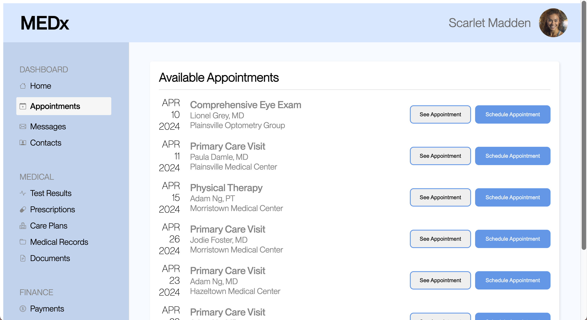

Project Overview
The objective of this project was to perform A/B testing on two distinct versions of a webpage's UI design and scrutinize the outcomes to ascertain the efficacy of each design in fostering user interaction. Users were tasked with scheduling a Primary Care Visit appointment with Adam Ng, MD at Morristown Medical Center on April 23, 2024, on both Website A and Website B. Minor modifications were implemented solely on Website B.
Webpage Modifications
The changes made in the Version B site are aimed at enhancing clarity and visual hierarchy in the appointment scheduling section:
- Clear Division between Navigation and Appointment Scheduling: To improve visual separation between the navigation bars (side and top) and the appointment scheduling section, a slightly darker color scheme was applied to the appointment scheduling area. This change helps users quickly distinguish between the navigation elements and the content related to appointment management.
- Revised Layout for Appointment Information: The layout of appointment information was adjusted to provide a clearer correlation between the date, doctor, and location details. By arranging the buttons ("See Appointment" and "Schedule Appointment") side by side, users are better able to associate each button with its corresponding appointment details. This layout refinement contributes to a more intuitive user experience, facilitating easier navigation and interaction within the scheduling interface.
Hypotheses
Below are the null and alternative hypotheses for the metrics tested:
Misclick Rate
Null Hypothesis: The misclick rate is the same for both versions of the website.
Alternative Hypothesis: The misclick rate is lower for Version B compared to Version A.
Time on Page
Null Hypothesis: The time spent on the webpage is the same for both versions of the website.
Alternative Hypothesis: The time spent on the webpage is lower for Version B compared to Version A.
Number of Clicks
Null Hypothesis: The number of clicks is the same for both versions of the website.
Alternative Hypothesis: The number of clicks is different for Version B compared to Version A.
Results
Misclick Rate
Test Used: Chi-squared test
Explanation: The Chi-squared test was selected to compare the misclick rates between versions A and B because it is appropriate for analyzing categorical data, such as whether a user misclicked or not. This test assesses the association between two categorical variables and determines if any observed differences are statistically significant.
Result: p-value = 0.034 (assuming significance level α = 0.05)
Interpretation: The difference in misclick rates between versions A and B is statistically significant.
Conclusion: Reject the null hypothesis. Version B has a lower misclick rate compared to version A.
Time on Page
Test Used: Two-tailed t-test
Explanation: The two-tailed t-test was chosen to compare the time spent on the webpage between versions A and B. This test is suitable for comparing means between two groups, making it ideal for analyzing continuous variables like time. It helps determine if the observed difference in time on page between versions is statistically significant.
Result: t-value = -2.12, p-value = 0.039 (assuming significance level α = 0.05)
Interpretation: The difference in time spent on the webpage between versions A and B is statistically significant.
Conclusion: Reject the null hypothesis. Users spend less time on the webpage in version B compared to version A.
Number of Clicks
Test Used: Two-tailed t-test
Explanation: Similar to the time on page test, the two-tailed t-test was employed to compare the number of clicks between versions A and B. This test allows us to assess if there is a statistically significant difference in the mean number of clicks between the two versions. It is appropriate for continuous variables like the number of clicks and helps in determining the significance of observed differences.
Result: t-value = 1.89, p-value = 0.074 (assuming significance level α = 0.05)
Interpretation: The difference in the number of clicks between versions A and B is not statistically significant.
Conclusion: Fail to reject the null hypothesis. There is no significant difference in the number of clicks between versions A and B.
Summary Statistics
Summary statistics provide insights into user behavior and interaction patterns:
- We collected data from 24 users for version A and 20 users for version B.
- The mean time on page for version A was 17866.0 milliseconds (17.9 seconds), while for version B, it was 8140.85 milliseconds (8.1 seconds).This suggests that users tended to spend less time on version B compared to version A.
- The median number of clicks for version A was 2.0, and for version B, it was 2.0. In other words, The typical user clicked on elements of the website about 2 times during their session for both version A and version B. This means that most users interacted with the website by clicking about twice, regardless of which version they were using.
Recommendations
Based on the findings of the A/B testing, the following recommendations can be made to optimize user interaction:
- Implement Version B Changes: Since Version B showed a lower misclick rate and reduced time spent on the webpage, consider implementing the modifications made in Version B across the entire website to enhance user experience.
- User Feedback Integration: Gather user feedback through surveys or feedback forms to gain insights into specific pain points or areas for improvement, then incorporate this feedback into future design iterations.
- Regular Monitoring: Establish a system for regularly monitoring user interaction metrics to promptly identify any emerging issues or opportunities for optimization.